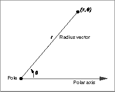
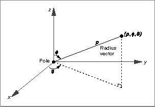

Polar and Spherical Points
QuickDraw 3D defines polar and spherical points in the usual way. A polar point is a point in a plane described using polar coordinates. As illustrated in Figure 4-7, a polar point is uniquely determined by a distance r along a ray (the radius vector) that forms a given angle q with a polar axis. Polar points are defined by theTQ3PolarPointdata type.Figure 4-7 A planar point described with polar coordinates
- Note
- Given a fixed polar origin and polar axis, a polar point can be described by infinitely many polar coordinates. For example, the polar point (5, p) is the same as the polar point (5, 3p).


typedef struct TQ3PolarPoint { float r; float theta; } TQ3PolarPoint;A spherical point is a point in space described using spherical coordinates. As illustrated in Figure 4-8, a spherical point is uniquely determined by a distance r along a ray (the radius vector) that forms a given angle q with the x axis and another given angle f with the z axis. Spherical points are defined by the
Field Description
r- The distance along the radius vector from the polar origin to the polar point.
theta- The angle, in radians, between the polar axis and the radius vector.
TQ3SphericalPointdata type.Figure 4-8 A spatial point described with spherical coordinates

typedef struct TQ3SphericalPoint { float rho; float theta; float phi; } TQ3SphericalPoint;
Field Description
rho- The distance along the radius vector from the polar origin to the spherical point.
theta- The angle, in radians, between the x axis and the projection of the radius vector onto the xy plane.
phi- The angle, in radians, between the z axis and the radius vector.